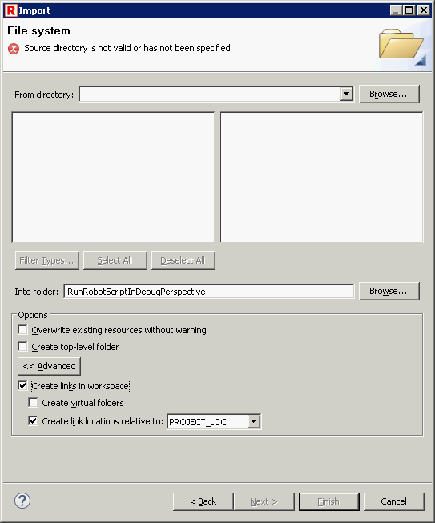

Different ways of importing files to project and workspace
Eclipse provides different ways of importing files to user workspace, some of the possibilities can lead to problems with RED.
Here are the possibilities how to include files to workspace from most recommended to least:
1. Create project and import existing files

Such import action will copy selected files to project folder under workspace path. Note that under Advanced options are unchecked.

2. Import existing project into workspace

Selected project will be copied to workspace.

3. Link project to workspace
Unchecked option will link project to workspace thus project will be stored in existing place. Note that having project outside of workspace might cause issues with paths to libraries and resources. Use this option with caution.

4. Link files to project
Linking files to project is the least recommended option.
